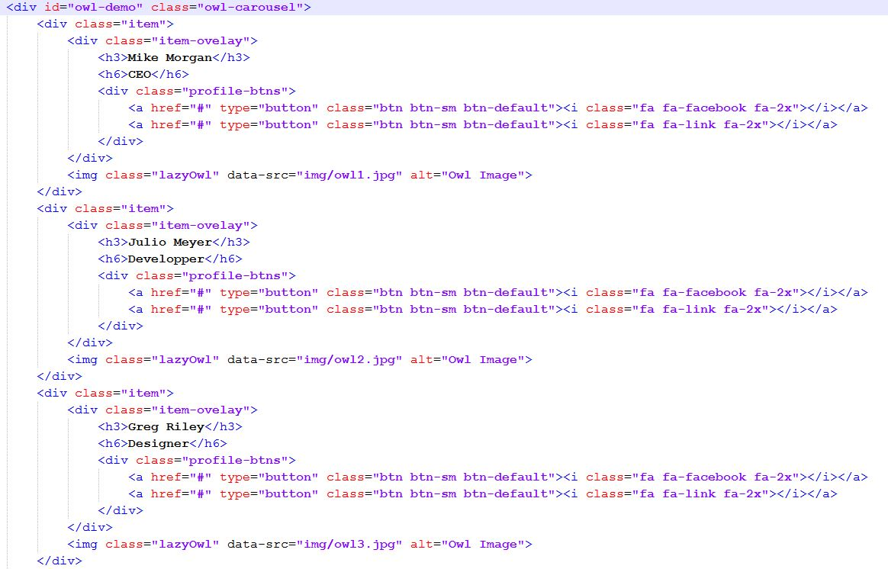
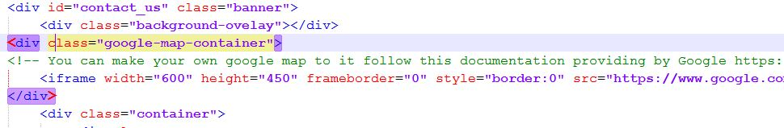

Created: 05/06/2014
By: Chamath Niamantha
Email: chamath2007@gmail.com
Thank you for purchasing my theme. If you have any questions that are beyond the scope of this help file, please feel free to email via my user page contact form here. Thanks so much!
This theme is a responsive layout with one column. Intro header (.intro-header) is the main view of this theme it contains count down timer, subscribe form working with PHP and MySQL, social media buttons and navigation bar.
Second view is About Us page this page contains some little text about you / your company you can add a image as well.
Third view contain team member slider and little content you can add more images to this slider. I'll explian it with below screen shot. #team-slider is the ID of the slider and it is the main wrapper of the slider. [.item] is a item of the slider under that you can see the .item-overlay it shows when someone hovering the mouse pointer on it it contains team member name (h3 tag), position (h6 tag) and Facebook profile link and you can have any other link it's on under the .profile-btns div you can change the href and icons too.
And the last thing is the contact us page it contains google map and PHP, Ajax powered contact us form. to change the google map first visit thie link Google Maps API. After you creating a map with a API Key replace the iframe under the .google-map-container div.
I'm using six CSS files in this theme. 1.angry_bull.css is the main theme layout. 2.bootstrap.css is a customized version of bootstrap theme. 3.owl.carousel.css is for the slider plugin. 4.owl.theme.css is for the slider plugin. 5.owl.transitions.css is for the slider plugin. 6.font-awesome.min.css is for the font icons follow the documentaion here
This theme imports 7 Javascript files.
var countDownTill = '2014/05/08'; // Give the date format like this yyyy/mm/ddYou can enter any date yyyy/mm/dd format.
I've included three PHP files with this theme:
comming_soonAngryBull.sql is a database structure sql file you can import this file with your phpMyAdmin panel.
In the db_connection.php file you need to change the $host,$user,$pass,$db with your server details otherwise the subscribe form and contact form will not work. So please add correct details to that.
contact_us.php is the contact form scripts PHP file I have commented some areas that you need to change in this file you have to change those.
subscribers.php is the subscribe form scripts no need to change anything in this file.
I've used the following images, icons or other files as listed.
Once again, thank you so much for purchasing this theme. As I said at the beginning, I'd be glad to help you if you have any questions relating to this theme. No guarantees, but I'll do my best to assist. If you have a more general question relating to the themes on ThemeForest, you might consider visiting the forums and asking your question in the "Item Discussion" section.
Chamath Nimantha